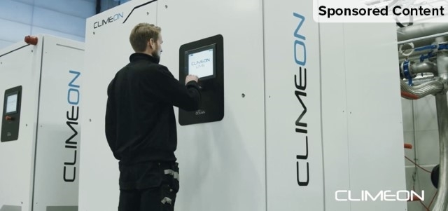

L'elettricità prodotta dal calore di scarto non è una novità, tuttavia la tecnologia di Climeon affronta le sfide che la tecnologia tradizionale affronta in modo innovativo,
davvero geniale. La domanda è se possono eseguire, se il prezzo / i tempi sono giusti e se quelli nelle industrie rilevanti si rendono conto che questa tecnologia
funziona e perché eccelle dove gli altri falliscono. https://climeon.com/.

Coltivazione Alkekengi in serra.
Sarà anche uno dei mestieri più antichi della storia dell’uomo,
ma l’agricoltura non conosce freni alla modernizzazione.
Quando si parla di agricoltura innovativa, infatti, si apre un enorme capitolo fatto di idee geniali,
di idee imprenditoriali che uniscono una profonda conoscenza della materia a una visione nuova del settore.
Oggi vogliamo partecipare per risolvere questi difetti e rendere la coltivazione eccellente nel suo periodo produttivo,
proprio per questo è nato il progetto cantiere alkekengi in serra.

LIFESTYLE
L'armonia della vita in campagna
Scopri di più >
L'armonia della vita in campagna
VIVERE IN ARMONIA CON LE FORZE DELLA NATURA.
Una casa, con i quattro elementi del fuoco, dell'acqua, della terra e dell'aria come temi che possono essere vissuti con tutti i sensi:
questa è l'unica casa a quattro elementi.